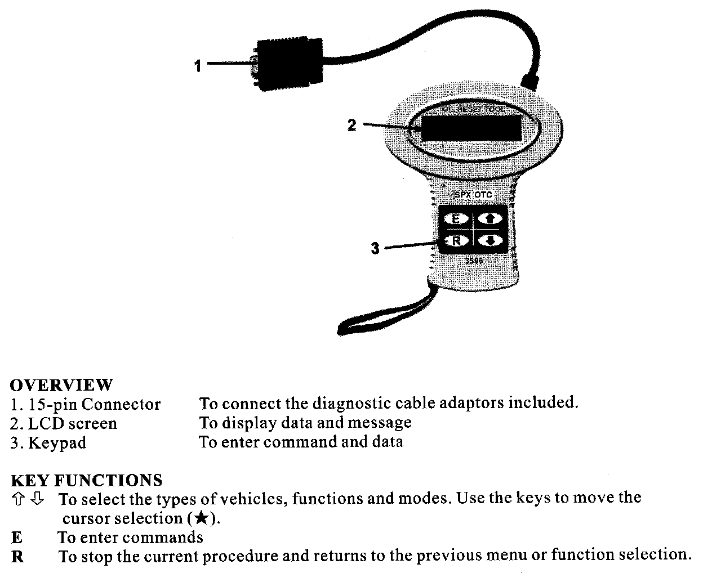

Using the OTC Oil Service Reset Tool
Operation steps for testing VOLKSWAGEN
Setting up:
Attach the VASS connector cable or OBD-II diagnostic cable to the tool 15-pin connector, and then plug into the vehicle diagnostic socket properly.
Vehicle Diagnostic Socket Locations for Reference

1. Located under the dust cover of the gear lever or at right side of upper cover of gear lever. Remove the dust cover, you will see a 16-pole diagnostic socket. Plug VW . AUDI adapter cable (16-pole) for the tool into the diagnostic socket.

2. Located at left up corner of the engine compartment, in the fuse box. Open the fuse box, you will see a black 2-pole diagnostic socket.
3. The black 2-pin diagnostic socket is power socket, plug black terminal of adapter cable (2-pole) for the tool into it. The white 2-pole diagnostic socket is signal socket. Plug white terminal of adapter cable (2-pole) into it.
OTC Oil Reset Tool:

Starting:
1. Turn Ignition ON and Engine OFF.

2. Move STAR cursor to VOLKSWAGEN and then press button E.

3. Move STAR cursor to select Golf3 and then press button E.